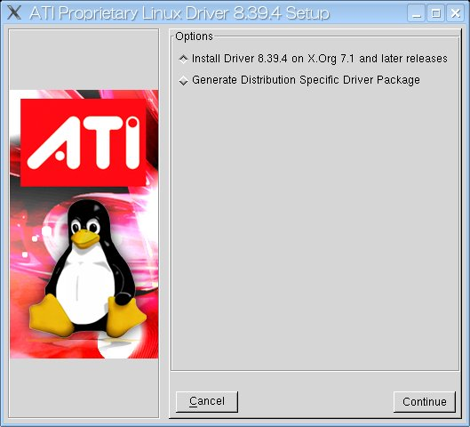

JavaOne Tokyo Hands on Lab :
Project Looking Glass (LG3D) Basic Programming
グラフィックス環境のセットアップ(Linux & ATI編)
LG3D を動かすには 24bit color, OpenGL 1.3以上をサポートした環境が必要です。
Linuxの場合、以下の環境が必要となります。
ドライバのインストール
AMD社のATIブランドのグラフィックスドライバは
AMD社のATI製品のウェブサイト（ http://ati.amd.com/jp/index.html ）
で公開されています。
トップページから「ドライバ&ソフトウェア」→「Linux x86」→「Radeon」→「対象となるグラフィックチップを選択」→「Go」と
リンクをたどっていくと見つかります。
ドキュメント記述時(2007/8)の最新版のドライバは 8.39.4 です。
Radeon 8500 をサポートしているドライバは 8.28.8 が最終リリースとなります。
そのため、Radeon 8500の場合は 8.28.8 を利用してください。
ドライバはインストールはルートユーザで行います。
インストール方法は次の通りです。
(ユーザーの入力したコマンドは赤(太字)で示します)
- ルートユーザになる。
> su -
Password: ←パスワードを入力
#
|
- グラフィックスドライバのインストーラを起動します。
# sh ati-driver-installer-8.39.4-x86.x86_64.run
Created directory fglrx-install.IM7081
Verifying archive integrity... All good.
Uncompressing ATI Proprietary Linux Driver-8.39.4...............................
................................................................................
................................................................................
................................................................................
................................................................................
................................................................................
................................................................................
................................................................................
......................................................................
==================================================
ATI Technologies Linux Driver Installer/Packager
==================================================
Detected configuration:
Architecture: i686 (32-bit)
X Server: X.Org 7.1 and later releases
|
上記のようにコマンドを実行すると、
下図のようなインストール用のGUIが表示されますので、指示にしたがって
グラフィックスドライバをインストールします。

- 下記のように aticonfig コマンドを用いて xorg.conf を作成します。
aticonfig は自動的にxorg.confを作成するコマンドです。
# aticonfig --initial --input=/etc/X11/xorg.conf
|
- Xを再起動します。
- Xの再起動後、fglrxinfoコマンドで OpenGL設定が正しく行われたことを確認します。
# fglrxinfo
display: :0.0 screen: 0
OpenGL vendor string: ATI Technologies Inc.
OpenGL renderer string: ATI MOBILITY RADEON 9600/9700 Series
OpenGL version string: 2.0.6650 (8.39.4)
|
補足:
Fedora Core 6/Fedora 7 の Xorg では Composite Extension がデフォルトで有効になっています。
fglrxドライバでは、DRI と Composite Extension の同時利用がおこなえず、Composite Extension
が優先されます。そのため、この状態ではLG3D がちゃんと動きません。
ですので、/etc/X11/xorg.conf に次の行を加えて Composite Extension を無効化します。
Section "Extensions"
Option "Composite" "false"
EndSection
|